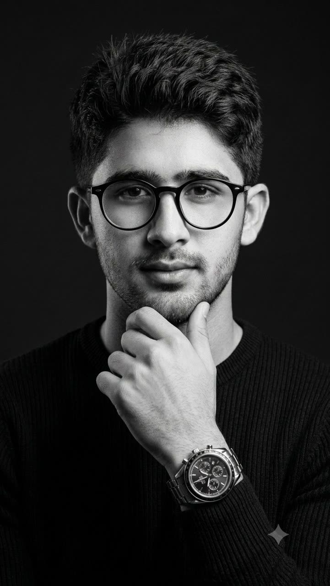

B&W studio portrait, sharp tailoring
WRD-019WardrobeGPT Image 2 / Nano Banana Pro (reference image)by Muhammad Jamil (@JamilAI55)2026-09-22

High-end cinematic black-and-white studio portrait of a sophisticated subject (reference-image based).
Prompt
④ Create the result Create a high-end cinematic black-and-white studio portrait of a sophisticated man seated in a relaxed, thoughtful pose. He has thick, naturally textured short hair styled upward, light-to-medium stubble with a defined beard line, and refined round/oval black eyeglasses. Preserve realistic masculine facial structure, natural skin texture, subtle asymmetry, and authentic expression. He wears a premium fitted black ribbed crew-neck sweater and a luxury stainless-steel chronograph wristwatch. His right hand is raised naturally to his chin, fingers gently resting beneath the jaw, creating an intellectual, contemplative pose. Body angled slightly away from camera while the face turns toward the viewer with a calm, confident expression. LIGHTING: Dramatic Rembrandt-style studio lighting from the upper-left, soft directional key light sculpting the forehead, cheekbones, nose and hand, with deep controlled shadows across the opposite side. Subtle rim separation around the hair and shoulders. BACKGROUND: Minimal seamless near-black studio background with a very subtle atmospheric gradient, cinematic falloff, no objects, no distractions. PHOTOGRAPHY: Luxury editorial portrait photography, medium close-to-medium framing, eye-level camera, 85mm portrait lens, f/1.8, shallow depth of field, precise facial focus, realistic optical compression, rich monochrome tonal range, deep blacks, luminous highlights, extremely detailed hair and skin texture, natural pores, realistic fabric texture, crisp watch details. MOOD & FINISH: Sophisticated, intellectual, timeless, mysterious, premium fashion-editorial aesthetic, museum-quality monochrome photography, cinematic contrast, authentic photographic realism, subtle film grain, impeccable tonal separation, ultra-detailed, 16K/32K quality. NEGATIVE PROMPT: cartoon, CGI, 3D render, plastic skin, beauty filter, excessive retouching, face distortion, identity drift, altered facial proportions, extra fingers, malformed hands, duplicate watch, distorted glasses, unrealistic eyes, oversharpening, blown highlights, crushed facial detail, noisy background, props, text, logo, watermark, low resolution, artificial skin, generic AI face.
Tags: tailoring, black and white, studio